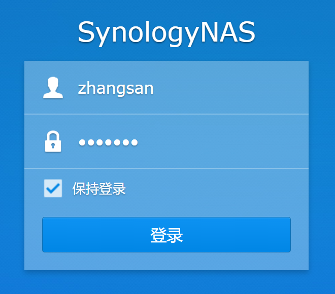
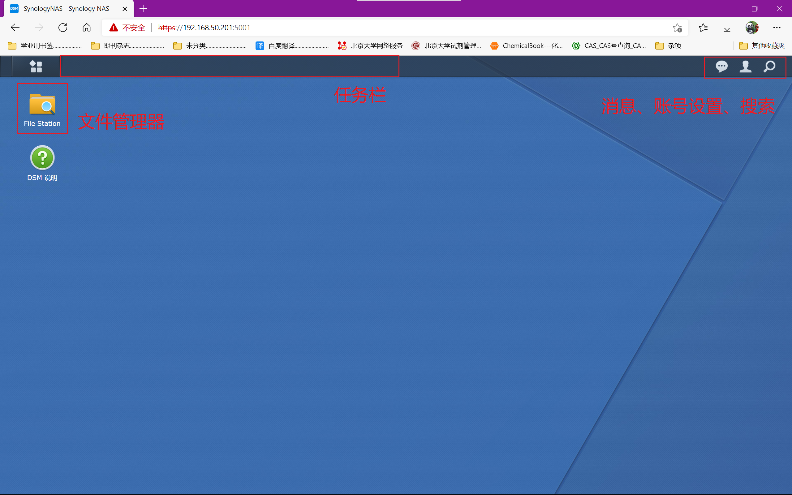
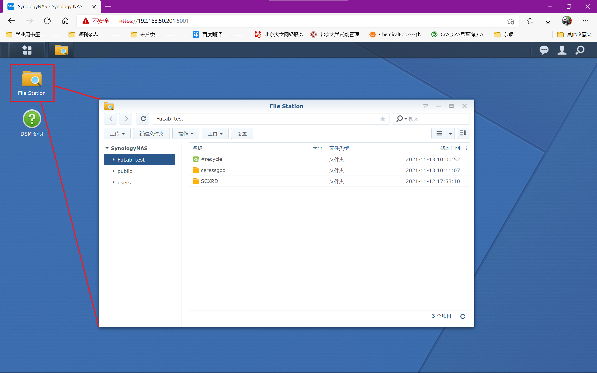
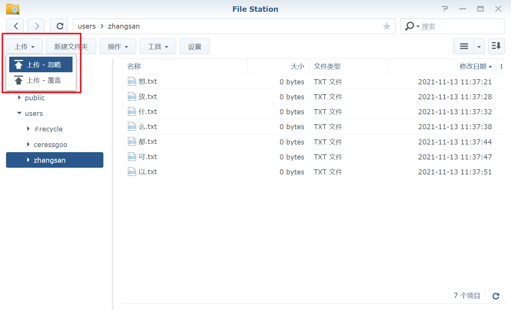
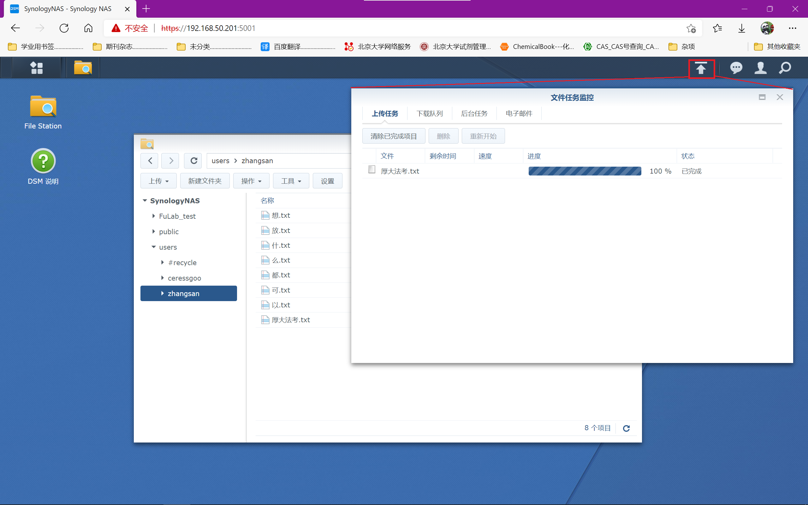
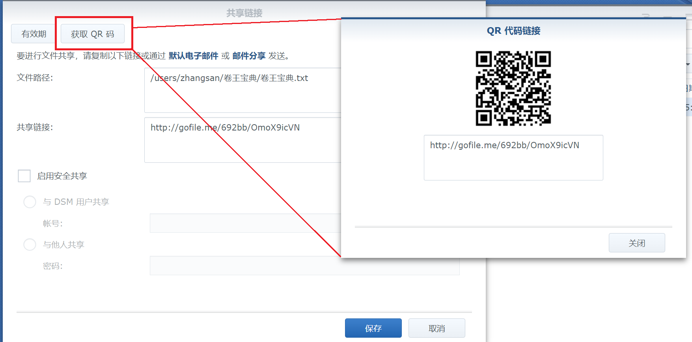
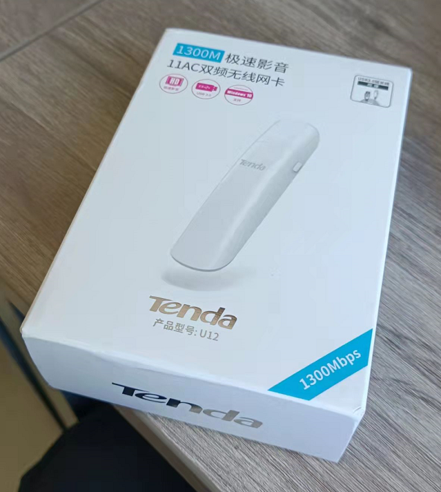

NAS(Network Attached Storage)指网络附属存储，用来在实验室成员之间提供文件存储和共享的功能。
你可以将它理解为课题组私有的一个小型百度网盘：每个人拥有自己的账号，登录后可以上传、下载、修改自己的文件，还可以查看其他人共享的资料和文献。只要有互联网的地方，就可以访问NAS，它就像你电脑的另一个磁盘一样。
公用账号：
首先你需要想好你喜欢的账号id，找老师或者我(gjz)新建一个用户，然后就可以开始使用啦！
可以在右上角头像-个人设置中修改自己的密码。
目前可以通过以下两个网址来访问实验室的NAS系统：
1. http://fulabccme.quickconnect.cn/
2. https:fulabccme.synology.me:61200
如果你正在休息室，且连接了A916的wifi的话，还可以通过192.168.50.201:5000来访问。
请注意NAS厂家为我们提供的网络代理服务并不是很稳定，如果一个网址打不开，可以点击另外的网址试试。
连接上NAS后，会显示如下的登录界面：

输入账号密码即可登录，进入NAS的主界面：

登录后，左上角的"File Station"是资源管理器，使用方法和我们自己电脑上的文件管理器一样，可以用来查看NAS上的文件。

NAS的根目录下分成了两个文件夹：
点击文件管理器左上角的上传按钮，可以从自己的电脑上传文件到NAS：

这时右上角会有上传图标，点开可以看到文件的上传进度：

要下载想要的文件，只需右键-下载即可；
剪切、复制、粘贴、新建文件夹等操作与自己电脑上的文件管理器相同，不再赘述。
请不要去public文件夹或其他人的文件夹里捣乱哦！(虽然大家也没那个权限就是了hhhh)
NAS可以当作百度网盘使用，可以生成二维码或者链接来分享你想发给其他人的文件：
右键目标文件-共享，会弹出共享窗口，复制二维码或链接即可共享文件。

如简介所述，有网的地方就能用NAS，只要测试仪器的电脑有网络连接，就可以通过浏览器登录你的NAS账号，然后把测试数据存储到云端，稍后可以在自己电脑上下载。
北大校园网覆盖范围还是挺广的，基本上能涵盖整座化学楼；
那如果有的电脑年代太久，没有网卡怎么办？（即没有wifi功能）
我们准备了USB无线网卡，放在我座位柜子的右上角。win10及以上的系统可以即插即用，给连不了wifi的电脑提供网络连接。

未完待续.......